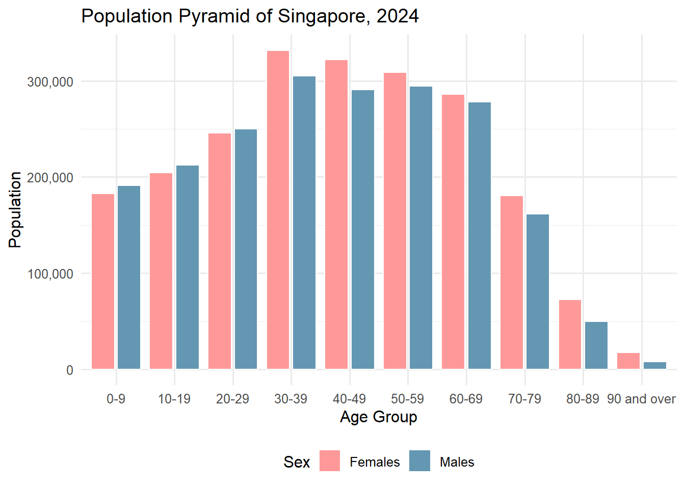
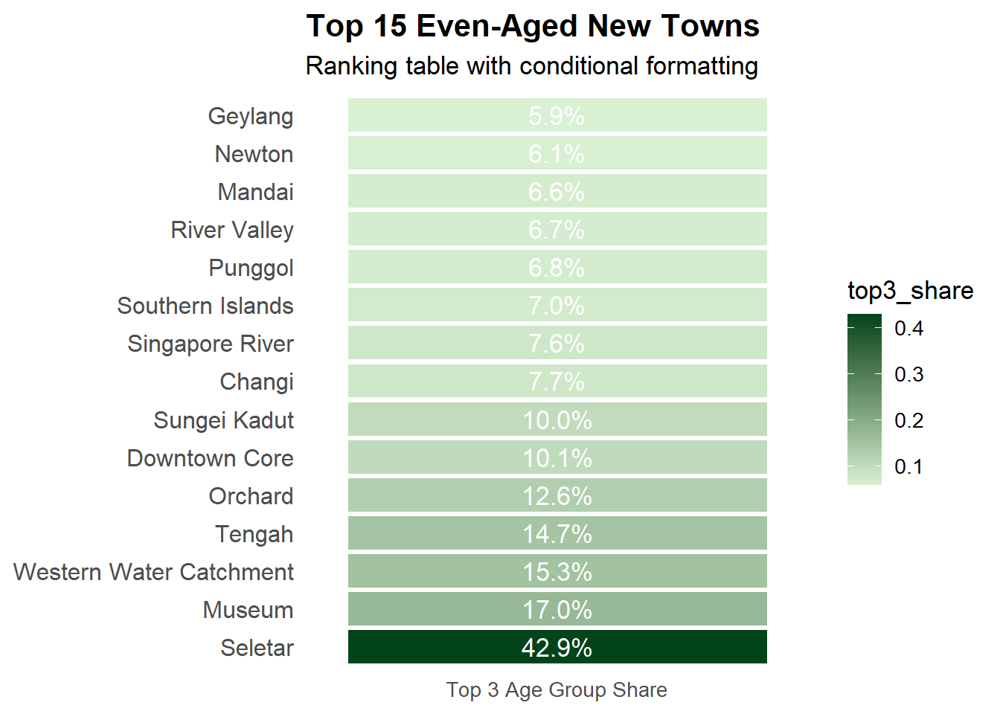
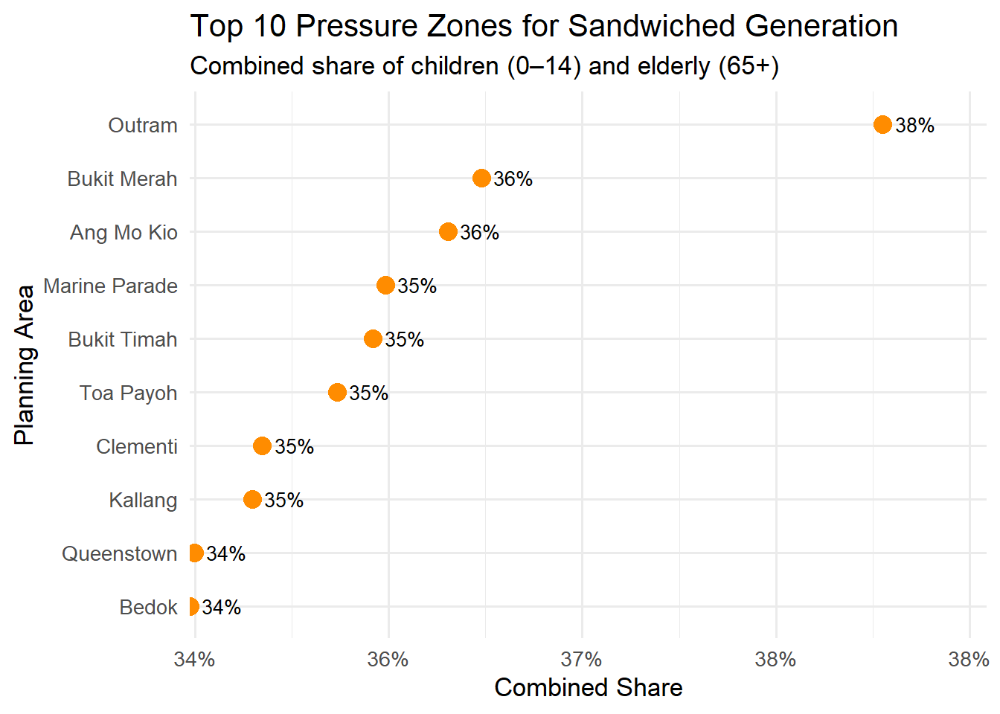

This take-home exercise explores the demographic structure of Singapore in 2024 using the “Singapore Residents by Planning Area / Subzone, Single Year of Age and Sex, June 2024” dataset from the Department of Statistics (DOS). The aim is to develop three insightful and reproducible data visualisations using R, focusing on:
Population Pyramid for Singapore (2024)
Even-Aged New Towns
Sandwiched Generation Pressure Zones
These visualisations highlight national age structure, uniform age distribution in newer estates, and areas with dual caregiver burdens — offering rich demographic insights.
0.2 Installing and Loading the Required Libraries
Library
Purpose
tidyverse
Core data wrangling and manipulation (includes dplyr, readr, tidyr, etc.). Used for filtering, grouping, summarising, and joining datasets.
ggplot2
Main plotting package for creating all data visualisations with a consistent grammar of graphics.
ggthemes
Provides additional clean and publication-ready themes for ggplot2. Enhances visual appeal of charts.
scales
Allows formatting of plot axes and labels (e.g., percentages, thousands separator). Used in y-axis label customisation.
forcats
Part of the tidyverse; provides tools for handling and ordering categorical variables (factors). Useful for reordering bars in charts.
library(tidyverse)
── Attaching core tidyverse packages ──────────────────────── tidyverse 2.0.0 ──
✔ dplyr 1.1.4 ✔ readr 2.1.5
✔ forcats 1.0.0 ✔ stringr 1.5.1
✔ ggplot2 3.5.2 ✔ tibble 3.2.1
✔ lubridate 1.9.4 ✔ tidyr 1.3.1
✔ purrr 1.0.4
── Conflicts ────────────────────────────────────────── tidyverse_conflicts() ──
✖ dplyr::filter() masks stats::filter()
✖ dplyr::lag() masks stats::lag()
ℹ Use the conflicted package (<http://conflicted.r-lib.org/>) to force all conflicts to become errors
library(ggthemes)library(scales)
Attaching package: 'scales'
The following object is masked from 'package:purrr':
discard
The following object is masked from 'package:readr':
col_factor
library(forcats)
0.3 Importing Data
For the purpose of this exercise, a data file called respopagesex2024.csv will be used. It consists of the mid-year 2024 population estimates of Singapore residents by planning area, subzone, single year of age, and sex. It is in CSV file format and is published by the Department of Statistics, Singapore.
The code chunk below imports respopagesex2024.csv into the R environment using the read_csv() function from the readr package, which is part of the tidyverse collection.
There are a total of six attributes in the df tibble data frame:
Four are categorical: PA (Planning Area), SZ (Subzone), Sex, and Time (Year)
Two are numerical: Age (single year of age) and Pop (population count)
df <-read_csv("data/respopagesex2024.csv")
Rows: 60424 Columns: 6
── Column specification ────────────────────────────────────────────────────────
Delimiter: ","
chr (4): PA, SZ, Age, Sex
dbl (2): Pop, Time
ℹ Use `spec()` to retrieve the full column specification for this data.
ℹ Specify the column types or set `show_col_types = FALSE` to quiet this message.
0.4 Data Wrangling
To ensure the dataset is ready for analysis and meaningful visualisation, the data wrangling steps are presented below with each step explained followed by the corresponding code.
0.4.1 1. General Cleaning
Step 1: Convert Age column to numeric
The original Age column contains the value “100+”, which must be recoded to 100 to allow numerical operations such as sorting, filtering, and aggregation.
df <- df %>%mutate(Age =case_when( Age =="90_and_Over"~"90",TRUE~ Age ),Age =as.numeric(Age))
0.4.2 2. For Population Pyramid (Visualisation 1)
Step 2: Aggregate national totals by age and sex
To visualise Singapore’s population pyramid, we sum up the population across all planning areas and subzones, grouped by Age and Sex.
df_national <- df %>%group_by(Age, Sex) %>%summarise(Pop =sum(Pop), .groups ="drop")df_national_band <- df_national %>%mutate(AgeGroup =case_when( Age <10~"0-9", Age >=10& Age <20~"10-19", Age >=20& Age <30~"20-29", Age >=30& Age <40~"30-39", Age >=40& Age <50~"40-49", Age >=50& Age <60~"50-59", Age >=60& Age <70~"60-69", Age >=70& Age <80~"70-79", Age >=80& Age <90~"80-89", Age >=90~"90 and over" )) %>%group_by(AgeGroup, Sex) %>%summarise(Pop =sum(Pop), .groups ="drop") %>%mutate(AgeGroup =factor(AgeGroup, levels =c("0-9", "10-19", "20-29", "30-39", "40-49", "50-59","60-69", "70-79", "80-89", "90 and over" )))
0.4.3 3. For Even-Aged New Towns (Visualisation 2)
Step 3: Identify even-aged towns using Top 3 Age Group Share
We measure the proportion of residents concentrated in the top 3 age groups within each planning area. A higher share suggests a more even-aged population profile, often seen in newer or low-density estates.
# Compute top 3 age group share for each Planning Areatop3_share <- df %>%group_by(PA, Age) %>%summarise(total =sum(Pop), .groups ="drop") %>%# Sum population by Planning Area and Agegroup_by(PA) %>%mutate(total_pa =sum(total)) %>%# Calculate total population per planning areaarrange(PA, desc(total)) %>%# Sort age groups by population within each PAgroup_by(PA) %>%slice(1:3) %>%# Select the top 3 most populous age groupssummarise(top3_share =sum(total) /first(total_pa)) %>%# Compute their share of total PA populationarrange(desc(top3_share)) %>%# Rank planning areas by this shareslice_head(n =15) # Keep the top 15 most even-aged towns# Prepare the datatop3_table <- top3_share %>%mutate(rank =row_number(),pct_label =paste0(sprintf("%.1f", top3_share *100), "%"))
0.4.4 4. For Sandwiched Generation Pressure Zones (Visualisation 3)
Step 4: Identify high-pressure planning areas for the sandwiched generation
We calculate the combined population share of children (aged 0–14) and elderly (aged 65 and above) in each planning area. These two groups typically require caregiving support, and a higher combined share suggests a greater likelihood of caregiving burden on the working-age population (the so-called “sandwiched generation”). This step helps identify areas with the greatest dual caregiving pressures, which are useful for informing policy on eldercare, childcare, and caregiver support infrastructure. The results are visualised using dot plots for clearer comparison across the top 10 pressure zones.
# Create new column to label children and elderlypressure_data <- df %>%mutate(age_group =as.numeric(as.character(Age)), # Convert age to numeric for comparisoncategory =case_when( # Categorise into Child, Elderly, or Other age_group <=14~"Child", age_group >=65~"Elderly",TRUE~"Other" ) ) %>%group_by(PA, category) %>%summarise(Pop =sum(Pop), .groups ="drop") %>%# Total population by planning area and age category tidyr::pivot_wider(names_from = category, values_from = Pop, values_fill =0# Fill missing values with 0 ) %>%mutate(Total = Child + Elderly + Other, # Calculate total population in each planning areacombined_share = (Child + Elderly) / Total # Compute combined share of children and elderly ) %>%select(PA, combined_share) %>%# Keep only relevant columnsarrange(desc(combined_share)) %>%# Rank by highest pressure (combined share)slice_head(n =10) # Select top 10 pressure zones
0.5 Visualisation 1: Population Pyramid for Singapore, 2024
ggplot(df_national_band, aes(x = AgeGroup, y = Pop, fill = Sex)) +geom_col(position =position_dodge(width =0.9), width =0.8, colour ="white") +scale_fill_manual(values =c("Females"="#ff9999", "Males"="#6497b1")) +scale_y_continuous(labels = scales::comma_format()) +labs(title ="Population Pyramid of Singapore, 2024",x ="Age Group", y ="Population") +theme_minimal(base_size =12) +theme(legend.position ="bottom")

0.6 Write Up for Visualisation 1: Population Pyramid for Singapore, 2024
In 2024, Singapore’s demographic structure reflects a mature population with significant policy implications. The population pyramid reveals a bulge in the working-age groups (30–59), indicating a strong but aging workforce. Youth segments (0–19) are relatively smaller, pointing to declining birth rate. A trend that aligns with national concerns over fertility and population replacement. The elderly population (aged 70 and above) is growing, driven by longer life expectancies and the aging of the baby boomer cohort. This shift intensifies pressure on healthcare infrastructure, eldercare services, and CPF retirement adequacy. Current policies such as the Action Plan for Successful Ageing and enhancements to pro-family schemes aim to address these demographic challenges. With a shrinking base of younger citizens, Singapore is also recalibrating immigration strategies and upskilling efforts to maintain economic competitiveness. The demographic distribution in 2024 thus reinforces the urgency of forward-looking social and economic planning to adapt to a rapidly greying society.
0.7 Visualisation 2: Even-Aged New Towns
ggplot(top3_table, aes(x ="Top 3 Age Group Share", y =reorder(PA, -top3_share))) +geom_tile(aes(fill = top3_share), color ="white", width =1, height =0.9) +geom_text(aes(label = pct_label), color ="white", size =4.5) +scale_fill_gradient(low ="#d9f0d3", high ="#00441b") +labs(title ="Top 15 Even-Aged New Towns",subtitle ="Ranking table with conditional formatting",x =NULL, y =NULL ) +theme_minimal(base_size =13) +theme(axis.text.x =element_text(angle =0, hjust =0.5),axis.ticks =element_blank(),panel.grid =element_blank(),axis.text.y =element_text(size =12),plot.title =element_text(face ="bold") )

0.8 Write Up for Visualisation 2: Even-Aged New Towns
In 2024, Singapore’s demographic distribution highlights sharp age concentration in several planning areas with small or transitional populations. Topping the list is Seletar, which exhibits the most even-aged structure likely a reflection of its limited residential base and new, clustered private housing developments. Other top-ranking areas like Museum, Western Water Catchment, and Southern Islands have similarly low and niche populations, often dominated by specific age groups due to institutional or non-residential land use. Tengah, a newly launched HDB town, features prominently as a youthful, family-oriented area shaped by Build-to-Order (BTO) launches, while Punggol continues its trend as a hub for young families. These demographic pockets point to planning areas with either a very small population or targeted residential growth. Recognizing such age clusters is crucial for anticipating demand in childcare, schooling, and youth-centric services, and for ensuring that infrastructure investments match population composition in evolving districts.
0.9 Visualisation 3: Sandwiched Generation Pressure Zones
ggplot(pressure_data, aes(x = combined_share, y =reorder(PA, combined_share))) +geom_point(size =4, color ="darkorange") +geom_text(aes(label = scales::percent(combined_share, accuracy =1)), hjust =-0.3, size =3.5) +labs(title ="Top 10 Pressure Zones for Sandwiched Generation",subtitle ="Combined share of children (0–14) and elderly (65+)",x ="Combined Share",y ="Planning Area" ) +scale_x_continuous(labels = scales::percent_format(accuracy =1),expand =expansion(mult =c(0, 0.15))) +theme_minimal(base_size =13)

0.10 Write Up for Visualisation 3: Sandwiched Generation Pressure Zones
In 2024, Singapore’s demographic data reveals mounting pressures on the sandwiched generation. Those caring for both children and elderly parents. Planning areas like Outram, Ang Mo Kio, and Bukit Merah rank highest in combined shares of young (0–14) and elderly (65+) residents. These mature estates often house multigenerational families, leading to dual caregiving responsibilities. This aligns with national concerns over ageing and low fertility, and highlights the need for targeted support. Recent initiatives, such as the Caregivers Support Action Plan and enhancements to eldercare and childcare schemes, aim to ease these burdens. As household structures evolve, planning for childcare services, eldercare facilities, and flexible work arrangements will become increasingly important in these pressure zones. Recognising where these dual demands are most concentrated helps policymakers deliver timely, place-based interventions. The data offers a snapshot of where intergenerational stress is most acute and where support systems must be strengthened to ensure family resilience.
0.11 Conclusion
The population pyramid of Singapore in 2024 reveals a broad-based working-age demographic concentrated between ages 30 and 59, reflecting the maturing profile of a developed nation. However, visualisations on spatial distribution highlight distinct patterns. The Top 15 Even-Aged New Towns analysis shows areas like Seletar, Museum, and Tengah with highly concentrated age groups likely driven by new housing projects or limited residential diversity. In contrast, the Top 10 Pressure Zones for the Sandwiched Generation including Outram, Bukit Merah, and Ang Mo Kio which exhibit high combined shares of children and elderly. These mature estates place greater caregiving pressure on the working-age population. Together, the analyses underscore a dual planning challenge: supporting young, demographically uniform towns with services for growing families, while reinforcing caregiving infrastructure in ageing districts. Tailored interventions across planning areas are essential for sustaining Singapore’s long-term social resilience in the face of evolving age dynamics.